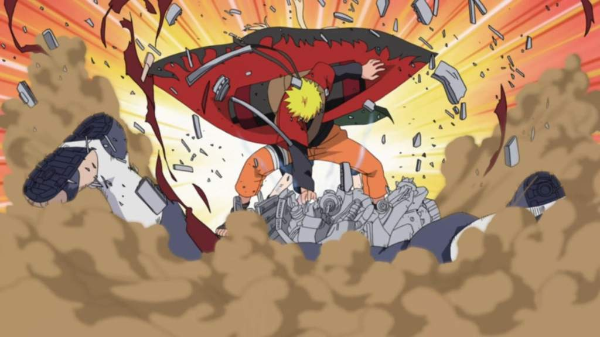
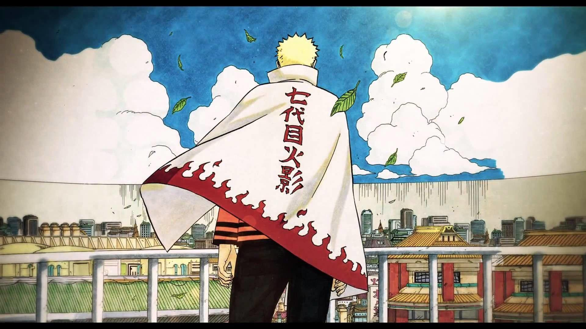
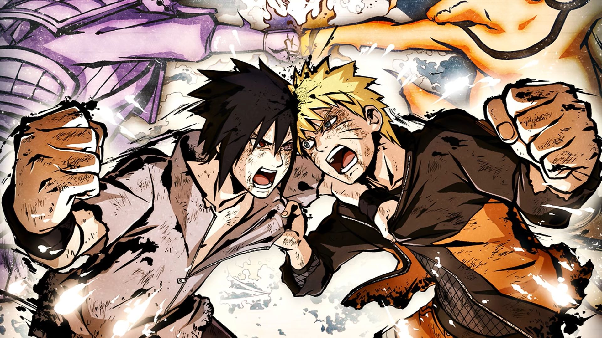

Naruto's face off against pain was arguably the most important fight in his Career as a shinobi because his victory cemented him as the protector of Konoha
 Since he was a kid, Naruto only wanted one thing and that was too become Hokage someday. Everyone doubted him at one point or another but Naruto's faith never wavered. Now he's the 7th Hokage of the Hidden Leaf Village
Sasuke was on the verge of using his power's too take over the world. If Naruto hadn't risked his life and sacrificed his arm, then Sasuke would have ended everything.